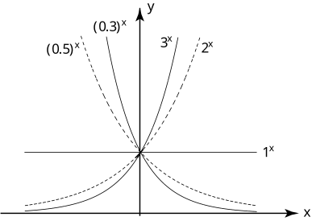

Long description: workbook6block1fig1

Alt text: The image displays a set of exponential growth and decay curves of the form \(y = a^x\) on a coordinate plane.
This description was generated by AI and has not been verified by a human. If you spot an error, please use the feedback link below.
- The graph plots several exponential functions, all of the form \(y = a^x\), where \(a\) is a positive constant not equal to one.
- The axes are labeled with \(x\) on the horizontal axis and \(y\) on the vertical axis.
- Several specific curves are labeled, including \(y = (0.5)^x\), \(y = (0.3)^x\), \(y = 1^x\), \(y = 2^x\), and \(y = 3^x\).
- The curve for \(y = 1^x\) is the horizontal line passing through \(y = 1\) for all values of \(x\).
- The curve for \(y = (0.5)^x\) is a decaying exponential function, passing through the points \((0, 1)\) and \((-1, 2)\).
- The curve for \(y = (0.3)^x\) is also a decaying exponential function, positioned to the left of \(y = (0.5)^x\) in the negative \(x\) direction.
- The curve for \(y = 2^x\) is an increasing exponential function, passing through the points \((0, 1)\), \((1, 2)\), and \((2, 4)\) (though the grid lines are not explicitly marked up to \(y=4\), the curve's steepness is evident).
- The curve for \(y = 3^x\) is the steepest increasing exponential function shown, passing through \((0, 1)\) and \((1, 3)\).
- The overall graph illustrates how the base \(a\) dictates whether the function exhibits exponential growth (when \(a > 1\), such as \(2^x\) and \(3^x\)) or exponential decay (when \(0 < a < 1\), such as \((0.5)^x\) and \((0.3)^x\)).